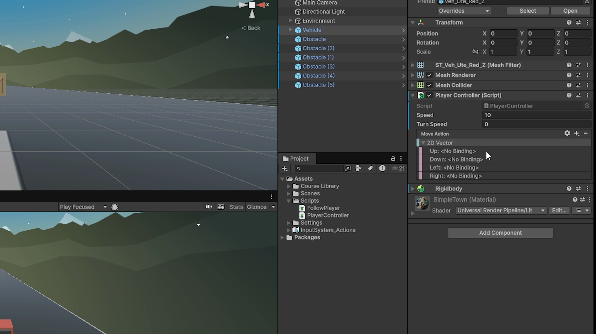
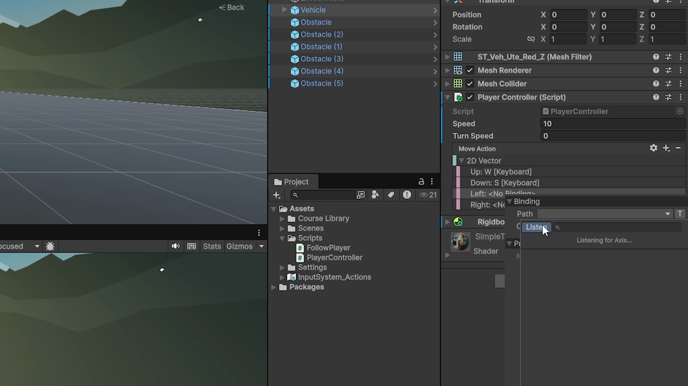

From direct key checks to Input Actions and scripted cameras
In Lecture 04 · Programming Essentials, the controller checked keyboard keys directly, then moved and turned a Rigidbody. The camera followed because it was a child of Player. This lab keeps that movement calculation and changes how we supply input and control the camera.
New in this lecture: configure keys through Input Actions, enable and disable those actions with the controller, and write an independent camera script. Compare a camera that keeps a fixed world direction with one that stays behind the turning vehicle.
Use the official Prototype 1 starter package in a new Universal 3D project. You do not need earlier project files. The complete scripts and setup instructions are included below.
Recap from Lecture 04: the movement and component model
Movement. A Vector2 holds two numbers. Our controller uses X for steering and Y for forward/reverse input, not world height. It moves along the vehicle’s forward direction with MovePosition and turns with MoveRotation.
Timing. Unity calls Update once per frame and FixedUpdate on its physics schedule. Multiplying speed by Time.fixedDeltaTime converts units per second into distance per physics step.
Component settings. Fields store values on a component. The Inspector lets us edit supported fields and assign object references, as you did for collectible speed and the VFX prefab. Apply final values outside Play mode and save.
1. Configure controls with Input Actions
In Lecture 04, adding a key meant editing a Keyboard.current check in C#. Here, we want to add another control layout in the Inspector while keeping the movement calculation unchanged. Unity’s Input System provides actions and bindings for this separation.
New conceptInput Actions
Unity’s Input System lets us describe a named operation, such as Move, separately from the keys used to perform it. In C#, this is an InputAction. The controller reads the action’s value instead of checking each key individually.
Examples
- Move: returns directional input that a controller can use for steering and driving.
- Jump: reports a button action that a character script could use to request a jump.
- Interact: reports a button action that a script could use to open a door or pick up an item. The action reports input. The script implements the behavior. Only Move is implemented in this lab.
New conceptBindings
A binding connects a device control to an action. We will connect WASD to Move, then add arrow keys to the same action. Both layouts will use the same movement code.
Examples
- Keyboard: bind Space to a Jump action.
- Mouse: bind the left mouse button to a Fire action.
- Alternative control: bind a gamepad button to the same Jump action. The jump code can read Jump regardless of which binding triggered it. These illustrate bindings, not additional lab tasks.
The controller still needs a Vector2: two numbers for steering (X) and forward/reverse input (Y). The action will supply this value instead of our code building it from individual key checks.
New concept2D Vector composites
A 2D Vector composite is a binding that combines Up, Down, Left, and Right buttons into one Vector2. The controller uses the resulting X and Y values to calculate steering and forward/reverse movement.
Examples
- Forward: W alone produces
(0, 1). The controller drives forward without steering. - Left: A alone produces
(−1, 0). The controller steers left without forward input. - Release: releasing all four keys produces
(0, 0). Neither driving nor steering is requested.
2. Control when the action listens
An Input Action must be enabled before it monitors its controls. We want it to listen while the controller is active and stop when the controller is disabled. Unity’s component event methods give us places to manage that lifetime.
Lecture 04 used Start, Update, and FixedUpdate: methods Unity calls at particular moments. Two more methods let us respond when the component becomes active or inactive.
New conceptOnEnable and OnDisable
OnEnableruns when the component becomes enabled and active. Our code callsmoveAction.Enable()here so the action starts monitoring its controls.OnDisableruns when the component becomes disabled or inactive. Our code disables the action and clears the stored input so the stopped controller does not retain an old command.
Examples
- Activate: enable the controller on an active Player. Unity calls
OnEnable, and our code enables Move. - Deactivate: disable the controller component. Unity calls
OnDisable, and our code disables Move and clears the stored value. - Reactivate: enable the component again.
OnEnableruns again, allowing the action to read controls without creating another controller.
New conceptInput sampling and physics movement
Lecture 04 checked keys inside FixedUpdate. With this lab’s dynamic Input System update setting, we read the action in Update and store its Vector2 value. FixedUpdate then uses that stored value for the Rigidbody movement from Lecture 04. Reading input and applying physics motion now have separate places in the script.
Examples
- Press W:
Updatereads(0, 1). A subsequentFixedUpdateuses that stored value to move forward. - Hold W: physics steps keep using the latest stored input. Each movement calculation uses the physics step duration.
- Release W: the next
Updatestores(0, 0). Subsequent physics steps receive no forward movement request.
3. Expose private settings in the Inspector
Lecture 04 used public fields for speed and a VFX prefab reference. We still need Inspector settings, but a field does not have to be public to appear there. This lab introduces [SerializeField] so we can keep fields private and still configure them in Unity.
New conceptPrivate serialized fields
Unity calls the process of storing supported field values serialization. Adding [SerializeField] before a supported private field makes Unity save it and show it in the Inspector. The C# keyword private still restricts direct access from other classes. Inspector visibility and C# access are separate concerns.
Examples
- A number:
exposes a configurable movement speed.[SerializeField] private float speed = 5f; - A vector:
exposes three camera-offset values.[SerializeField] private Vector3 offset; - An object reference:
provides an Inspector field where you can assign Player.[SerializeField] private Transform target;
Just as the collectible needed a VFX prefab reference, the camera needs to know which vehicle to follow. Its target field holds a reference to Player’s Transform, the component that describes an object’s position, rotation, and scale. Dragging Player into Target supplies that reference. Naming an object “Player” alone does not assign it.
4. Calculate the camera position independently
In Lecture 04, parenting made the camera follow Player’s position and rotation automatically. Here, the camera stays outside Player’s hierarchy so our script can choose whether it follows position only or also responds to turning. A following camera needs a position relative to the vehicle. We describe the separation using an offset: a displacement from the vehicle to the camera. A Vector3 holds the three numbers needed for this displacement: X, Y, and Z.
New conceptWorld-space camera offset
World coordinates use the scene’s fixed axes. An offset of (0, 5, −8) places the camera 5 units above and 8 units along negative world Z from Player. Adding target.position + offset gives the camera’s world position. Turning Player does not change this offset’s direction. Assign this destination directly. Do not multiply it by deltaTime, which would scale the position coordinates.
Examples
- At the origin: Player
(0, 0, 0)plus offset(0, 5, −8)gives camera(0, 5, −8). - After moving: Player
(2, 0, 4)plus the same offset gives camera(2, 5, −4). - After turning in place: if Player stays at
(2, 0, 4), the camera stays at(2, 5, −4). This calculation does not use Player’s rotation.
New conceptPlayer-relative camera offset
To keep the camera behind a turning vehicle, the offset must turn with it. The expression target.rotation * offset rotates the displacement using Player’s orientation. Adding Player’s position then places the camera in the scene. Using rotation alone keeps the offset distance independent of Player’s scale. This applies the Local/Global distinction from Lecture 01 · Unity Editor Fundamentals.
Examples
- Facing world +Z: with offset
(0, 5, −8), the camera sits toward world −Z from Player. - Facing world +X: the rotated offset places the camera toward world −X from Player.
- Facing world −Z: the rotated offset places the camera toward world +Z from Player. In these level turns, the camera remains 5 units above Player.
New conceptLookAt: camera orientation
Moving the camera does not automatically make it face Player. After setting its position, LookAt(target.position) rotates the camera toward Player. The required final task combines these two operations to make a chase camera.
Examples
- Player ahead:
LookAtpoints the camera toward Player from its current location. - Player moves left: with the camera position held fixed, calling
LookAtagain turns the camera toward Player’s new location. - Camera moves higher: after changing its position,
LookAtadjusts the viewing angle toward Player.LookAtitself does not change the camera’s position.
5. Schedule the camera with LateUpdate
New conceptLateUpdate
The camera reads the vehicle’s Transform to calculate its own position. Unity provides another event method, LateUpdate, which runs after the frame’s Update methods. We put the camera calculation there so following happens later in the frame.
Examples
- Movement in
Update: a camera calculation inLateUpdatereads the Transform after that frame’sUpdatemethods have run. - No player movement:
LateUpdatestill runs each frame while the camera component is active. The same target position produces the same camera destination. - A physics-driven player: this lab’s camera reads the displayed Transform in
LateUpdate. Its timing does not replaceFixedUpdateor make physics run once per rendered frame.
New conceptRigidbody interpolation
LateUpdate controls execution order. It does not smooth motion. Because physics advances in fixed steps, the Rigidbody’s Interpolate setting smooths its displayed pose between those steps. The camera follows that displayed Transform through target.position.
Examples
- Steady travel: interpolation uses previous physics poses to smooth the displayed motion between fixed steps.
- A stationary vehicle: identical physics poses produce an unchanged displayed position. Interpolation does not create movement.
- A missing camera target: interpolation cannot repair the reference. It smooths a body’s displayed motion, not the camera’s configuration.
Continue to the practical steps. Each section repeats the relevant concepts under a Refresher label, so you can review them alongside the practical work.
Project preparation
Project creation, asset placement, and Input System activation reuse earlier Editor skills. This fresh project supplies the scene for the new input and camera work.
| Time | Work |
|---|---|
| 00–07 | Connect to Lecture 04, then introduce actions, their lifetime, and the two scripted camera calculations. |
| 07–12 | Place the starter vehicle and attach the supplied controller. |
| 12–24 | Configure the action, bind WASD, and inspect input values. |
| 24–34 | Write, assign, and test the follow camera. |
| 34–39 | Run two controlled fault tests. |
| 39–48 | Complete the required applied task. |
| 48–56 | Implement and compare the required player-relative chase camera. |
| 56–60 | Explain the result, save, and check completion. |
Prepare the official starter
Create a fresh project with the rendering setup needed by the starter assets.
In Unity Hub → New project, select Unity 6.3 and the Universal 3D template.Name the new project SWE402_PlayerControl and create it in a new folder.Bring the ready-made road, vehicles, and obstacles into your project.
Download Prototype 1 Starter Files · Unity 6 (.unitypackage).In the new Editor project, select Assets → Import Package → Custom Package….Select the downloaded .unitypackage.Select All → Import.This download is already a Unity package; import it directly.Create your own working scene while preserving the original starter.
In the Project window, open Assets → Scenes → Prototype 1.Select File → Save As… and save a working copy as Assets/Scenes/PlayerControlLab.unity.The original road scene remains available as a clean starting point.Enable the Input System so the controller can receive keyboard input through actions.
Open Window → Package Management → Package Manager.Check In Project for Input System.If absent, select Unity Registry, find Input System, and install it.In Edit → Project Settings → Player → Other Settings → Configuration, set Active Input Handling to Input System Package (New).Save and allow the restart if prompted.In Project Settings → Input System Package → Settings, keepUpdateMode: Process Events In DynamicUpdate.Confirm that the scene, assets, and editor are ready before the lab begins.
Reopen PlayerControlLab after any restart.Confirm that the road is visible in Scene view and Assets/Course Library/Vehicles contains vehicle prefabs.Open your script editor.Setup is complete.
Package source: Unity Learn · Lesson 1.1: Start your 3D Engines. Use its Unity 6 starter download if the direct download link changes.
Instructor opening: show WASD and arrow keys producing the same movement. Turn Player while the camera keeps facing the same world direction. Ask: “Which part should change when we change a key?” Leave the answer visible: binding → action value → movement → camera.
Scope decisions for lecture preparation
Editor navigation, prefabs, colliders, Rigidbody basics, time-scaled movement, rotation, and Play-mode tuning were covered in Lectures 01–04. This sheet reuses them without another tutorial. From the Player Control unit, it selects Input Actions from Lesson 1.4 and scripted following from Lesson 1.3. Private serialized fields and paired enable/disable methods clarify those implementations.
Prepare the official scene import before class. Skip collision effects, layout/tint customization, full plane challenge, project-design document, teamwork module, and quiz. The plane challenge contributes the idea of diagnosing one fault at a time. Camera smoothing systems, gamepad setup, and runtime rebinding are outside the required hour. A short player-relative chase-camera comparison is required. Use the introduction and labeled refreshers for explanation and leave the optional FAQs for questions or later reading.
Refresher (1)Input Actions
Unity’s Input System lets us describe a named operation, such as Move, separately from the keys used to perform it. In C#, this is an InputAction. The controller reads the action’s value instead of checking each key individually.
Examples
- Move: returns directional input that a controller can use for steering and driving.
- Jump: reports a button action that a character script could use to request a jump.
- Interact: reports a button action that a script could use to open a door or pick up an item. The action reports input. The script implements the behavior. Only Move is implemented in this lab.
Optional FAQs
Do I need my previous project?
No. Start from the fresh Universal 3D project and official Prototype 1 package described above. Both required scripts are provided here.
Do I need to watch all the source videos?
No. The page contains the required instructions. Videos and these FAQs are optional reference material.
Place the vehicle in the starter scene
The Rigidbody movement calculation comes from Lecture 04. Use the supplied controller as the baseline. Focus your code reading on its InputAction field, enable/disable methods, and input read in Update.
New conceptKinematic Rigidbody
With Is Kinematic enabled, the script controls the body’s movement rather than gravity and forces. This lab uses that mode for its supplied movement code. Interpolate, introduced above, smooths the displayed pose between physics steps.
Examples
- This vehicle: the controller requests position and rotation changes with
MovePositionandMoveRotation. - A moving platform: a script could move a kinematic body along a predefined route.
- A falling ball: a body meant to fall under gravity needs dynamic simulation instead. A kinematic body will not begin falling simply because Use Gravity is checked.
Open the PlayerControlLab scene prepared above. Keep the supplied road, environment, Main Camera, and Directional Light. Use the same red pickup for the guided steps so everyone starts with the same scale and forward direction.
Place the vehicle at the road’s starting point, facing the direction it will drive.
In Assets → Course Library → Vehicles, drag Veh_Ute_Red_Z into the Hierarchy.Rename this scene instance Player.Set its Transform position and rotation to (0, 0, 0) and scale to (1, 1, 1).Its forward direction is +Z along the road.Give the vehicle a physics body that the supplied script can move and turn.
Select the root Player object, not a wheel or other child.Add a Rigidbody and set Use Gravity: off, Is Kinematic: on, and Interpolate: Interpolate.This lesson uses script-driven motion.Physics-based driving and obstacle impacts are outside its scope.Add two visible landmarks so you can repeat the same driving test.
From Assets → Course Library → Obstacles, drag Prop_Cone_01 into the scene twice.Rename the instances Marker A and Marker B and use the positions below.Keep them as visual route markers.Frame the vehicle from above and behind without making the camera its child.
Select the existing Main Camera and enter the listed position and rotation.Keep it at the scene root, at the same indentation level as Player.Attach the supplied movement behavior to the vehicle so it can respond once bindings are assigned.
Create Assets/Scripts.Inside it, create aMonoBehaviourScript named PlayerControlLab.Replace its entire contents with the file below and save.Drag the script onto the root Player.Wait for compilation, then save the scene.
| Object | Position (X, Y, Z) | Rotation / scale |
|---|---|---|
| Player · Veh_Ute_Red_Z | (0, 0, 0) | Rotation (0, 0, 0); scale (1, 1, 1) |
| Marker A · Prop_Cone_01 | (−3, 0, 12) | Rotation (0, 0, 0); scale (1, 1, 1) |
| Marker B · Prop_Cone_01 | (3, 0, 24) | Rotation (0, 0, 0); scale (1, 1, 1) |
| Main Camera | (0, 5, −8) | Rotation (30, 0, 0); scale (1, 1, 1) |
using UnityEngine;
using UnityEngine.InputSystem;
[RequireComponent(typeof(Rigidbody))]
public class PlayerControlLab : MonoBehaviour
{
[SerializeField] private float speed = 5f;
[SerializeField] private float rotationSpeed = 120f;
[SerializeField] private InputAction moveAction =
new InputAction("Move", InputActionType.Value,
expectedControlType: "Vector2");
[SerializeField] private Vector2 moveInput; // Observe in Play mode.
private Rigidbody body;
private void Awake()
{
body = GetComponent<Rigidbody>();
}
private void OnEnable()
{
moveAction.Enable();
}
private void OnDisable()
{
moveAction.Disable();
moveInput = Vector2.zero;
}
private void Update()
{
moveInput = moveAction.ReadValue<Vector2>();
}
private void FixedUpdate()
{
Vector3 movement = transform.forward * moveInput.y
* speed * Time.fixedDeltaTime;
body.MovePosition(body.position + movement);
float steering = moveInput.x;
if (moveInput.y < 0f) steering = -steering;
float angle = steering * rotationSpeed * Time.fixedDeltaTime;
body.MoveRotation(body.rotation * Quaternion.Euler(0f, angle, 0f));
}
}
The controller is attached, but Move Action has no bindings. What should happen when you press W? Which check comes first if the script does not compile?
Reveal answer
Player remains stationary because the action has no bound control producing input. Resolve red Console compile errors before testing bindings. Enter Play mode to test your prediction, then exit before configuring the action.
Refresher (1)Kinematic Rigidbody
With Is Kinematic enabled, the script controls the body’s movement rather than gravity and forces. This lab uses that mode for its supplied movement code.
Examples
- This vehicle: the controller requests position and rotation changes with
MovePositionandMoveRotation. - A moving platform: a script could move a kinematic body along a predefined route.
- A falling ball: a body meant to fall under gravity needs dynamic simulation instead. A kinematic body will not begin falling simply because Use Gravity is checked.
Refresher (1)OnEnable and OnDisable
OnEnableruns when the component becomes enabled and active. Our code callsmoveAction.Enable()here so the action starts monitoring its controls.OnDisableruns when the component becomes disabled or inactive. Our code disables the action and clears the stored input so the stopped controller does not retain an old command.
Examples
- Activate: enable the controller on an active Player. Unity calls
OnEnable, and our code enables Move. - Deactivate: disable the controller component. Unity calls
OnDisable, and our code disables Move and clears the stored value. - Reactivate: enable the component again.
OnEnableruns again, allowing the action to read controls without creating another controller.
Refresher (1)Input sampling and physics movement
Lecture 04 checked keys inside FixedUpdate. With this lab’s dynamic Input System update setting, we read the action in Update and store its Vector2 value. FixedUpdate then uses that stored value for the Rigidbody movement from Lecture 04. Reading input and applying physics motion now have separate places in the script.
Examples
- Press W:
Updatereads(0, 1). A subsequentFixedUpdateuses that stored value to move forward. - Hold W: physics steps keep using the latest stored input. Each movement calculation uses the physics step duration.
- Release W: the next
Updatestores(0, 0). Subsequent physics steps receive no forward movement request.
Optional FAQs
Should the controller go on a wheel?
No. Add it and the Rigidbody to the root object named Player. Child wheels then move with that root.
Why does the car not fall off the road?
Gravity is off and the body is kinematic in this focused control test. Falling, suspension, and impact physics are not implemented by this controller.
Configure the Move action
Lecture 04 hard-coded both keyboard layouts. Here, you will produce the same movement values through Inspector bindings. Adding arrow keys later should require no movement-code changes.
The supplied controller creates Move as a Value action with Vector2 input. Configure its bindings below.
Set nonzero movement and rotation speeds for testing.
Select Player.In Player Control Lab (Script), verify Speed = 5 and Rotation Speed = 120.Configure Move to produce the two input values the controller expects.
Expand Move Action.Its gear menu exposes action properties; verify Action Type: Value and Control Type:Vector2.Combine four directional buttons into a single two-dimensional input value.
Select the action’s + menu, then Add Up/Down/Left/Right Composite.Expand the resulting 2D Vector row.Connect WASD to the four directions of the Move action.
Double-click Up.Open its Path selector and choose Listen.Press W and select the detected W key.Repeat for Down = S, Left = A, Right = D.Confirm that every direction has a key and save the bindings with the scene.
Verify that none of the four rows says <No Binding>.Save the scene.These are bindings on this component; no separate Input Actions asset or PlayerInput component is needed.Prove that pressing each key produces the expected input value before diagnosing movement.
Enter Play mode, keep Player selected, and click the Game view to give it keyboard focus.Watch Move Input in the Inspector while pressing one key at a time.


| Input | Move Input (X, Y) | Meaning in this controller |
|---|---|---|
| No key | (0, 0) | Stop translating and turning. |
| W | (0, 1) | Move along Player’s forward direction. |
| S | (0, −1) | Reverse. |
| A | (−1, 0) | Turn left in place. |
| D | (1, 0) | Turn right in place. |
moveInput.y means forward/reverse intent here, not world height. moveInput.x means steering, not sideways translation. The movement code makes those choices. With the default normalized composite, a diagonal such as W+D produces components near 0.71; that is expected, not a broken binding.
Predict the behavior for D alone and W+D. Then predict what happens when you disable and re-enable Player Control Lab. Test each prediction in Play mode.
Reveal answer
D supplies steering with zero forward input, so the vehicle turns in place. W+D combines forward input and steering; the normalized composite produces components near 0.71. Disabling the component disables its action and clears cached input; re-enabling activates it again. Click Game view before testing keys and leave the component enabled afterward.
Refresher (2)Input Actions
Unity’s Input System lets us describe a named operation, such as Move, separately from the keys used to perform it. In C#, this is an InputAction. The controller reads the action’s value instead of checking each key individually.
Examples
- Move: returns directional input that a controller can use for steering and driving.
- Jump: reports a button action that a character script could use to request a jump.
- Interact: reports a button action that a script could use to open a door or pick up an item. The action reports input. The script implements the behavior. Only Move is implemented in this lab.
Refresher (1)Bindings
A binding connects a device control to an action. We will connect WASD to Move, then add arrow keys to the same action. Both layouts will use the same movement code.
Examples
- Keyboard: bind Space to a Jump action.
- Mouse: bind the left mouse button to a Fire action.
- Alternative control: bind a gamepad button to the same Jump action. The jump code can read Jump regardless of which binding triggered it. These illustrate bindings, not additional lab tasks.
Refresher (1)2D Vector composites
A 2D Vector composite is a binding that combines Up, Down, Left, and Right buttons into one Vector2. The controller uses the resulting X and Y values to calculate steering and forward/reverse movement.
Examples
- Forward: W alone produces
(0, 1). The controller drives forward without steering. - Left: A alone produces
(−1, 0). The controller steers left without forward input. - Release: releasing all four keys produces
(0, 0). Neither driving nor steering is requested.
Refresher (1)Private serialized fields
Unity calls the process of storing supported field values serialization. Adding [SerializeField] before a supported private field makes Unity save it and show it in the Inspector. The C# keyword private still restricts direct access from other classes. Inspector visibility and C# access are separate concerns.
Examples
- A number:
exposes a configurable movement speed.[SerializeField] private float speed = 5f; - A vector:
exposes three camera-offset values.[SerializeField] private Vector3 offset; - An object reference:
provides an Inspector field where you can assign Player.[SerializeField] private Transform target;
Optional FAQs
Why are diagonal values about 0.71 instead of 1?
The default 2D Vector composite normalizes diagonal input to length 1. Two equal components are approximately 0.707 each.
Why not enable the action only in Start?
Start runs once for a component instance. OnEnable runs again when the component is re-enabled, matching the paired OnDisable cleanup.
Do I need a PlayerInput component?
No. This script owns an embedded InputAction and enables it directly. Its bindings are configured on the component.
Implement a fixed-heading follow camera
Lecture 04’s child camera inherited Player’s rotation. This script will follow Player’s position while keeping a fixed heading. Turning the vehicle will demonstrate the difference.
Attach the follow-camera script to Main Camera.
Create FollowPlayerLab.cs in Scripts.Replace the template with the complete file below, save, and attach it to Main Camera.Tell the follow component which scene object it should track.
In the Main Camera Inspector, drag “Player” from the Hierarchy into the script’s Target field.This stores a reference to that scene object’s Transform; typing a name in code would not assign it.Set the camera’s viewing distance and fixed world heading.
Set Offset = (0, 5, −8).Keep the camera’s Transform rotation at (30, 0, 0) and ensure it has no parent or competing camera-control script.Confirm that the camera follows movement while keeping its own orientation.
Enter Play mode.Move forward, reverse, and turn.Player stays in view while the camera keeps the same heading.Stop and save the scene.
using UnityEngine;
public class FollowPlayerLab : MonoBehaviour
{
[SerializeField] private Transform target;
[SerializeField] private Vector3 offset = new Vector3(0f, 5f, -8f);
private void LateUpdate()
{
if (target == null) return;
transform.position = target.position + offset;
}
}
Player is at (−3, 0, 10), with Offset (0, 5, −8). What is the camera position? If Player turns 90° in place, does this camera circle it?
Reveal answer
The camera is at (−3, 5, 2). The displacement is in world space, so turning Player does not rotate the offset or change the camera’s heading. A parented camera would inherit the parent’s rotation.
Refresher (1)Target reference
The camera needs to know which vehicle to follow. Its target field holds a reference to Player’s Transform, the component that describes an object’s position, rotation, and scale. Dragging Player into Target supplies that reference. Naming an object “Player” alone does not assign it.
Examples
- Player assigned: the camera reads Player’s Transform and follows it.
- Another object assigned: the same script follows that object instead. The reference determines which Transform is read.
- Target is None: this lab’s null check returns without updating the camera position. Naming an object Player does not fill the field.
Refresher (1)World-space camera offset
World coordinates use the scene’s fixed axes. An offset of (0, 5, −8) places the camera 5 units above and 8 units along negative world Z from Player. Adding target.position + offset gives the camera’s world position. Turning Player does not change this offset’s direction. Assign this destination directly. Do not multiply it by deltaTime, which would scale the position coordinates.
Examples
- At the origin: Player
(0, 0, 0)plus offset(0, 5, −8)gives camera(0, 5, −8). - After moving: Player
(2, 0, 4)plus the same offset gives camera(2, 5, −4). - After turning in place: if Player stays at
(2, 0, 4), the camera stays at(2, 5, −4). This calculation does not use Player’s rotation.
Refresher (1)LateUpdate
The camera reads the vehicle’s Transform to calculate its own position. Unity provides another event method, LateUpdate, which runs after the frame’s Update methods. We put the camera calculation there so following happens later in the frame.
Examples
- Movement in
Update: a camera calculation inLateUpdatereads the Transform after that frame’sUpdatemethods have run. - No player movement:
LateUpdatestill runs each frame while the camera component is active. The same target position produces the same camera destination. - A physics-driven player: this lab’s camera reads the displayed Transform in
LateUpdate. Its timing does not replaceFixedUpdateor make physics run once per rendered frame.
Refresher (1)Rigidbody interpolation
LateUpdate controls execution order. It does not smooth motion. Because physics advances in fixed steps, the Rigidbody’s Interpolate setting smooths its displayed pose between those steps. The camera follows that displayed Transform through target.position.
Examples
- Steady travel: interpolation uses previous physics poses to smooth the displayed motion between fixed steps.
- A stationary vehicle: identical physics poses produce an unchanged displayed position. Interpolation does not create movement.
- A missing camera target: interpolation cannot repair the reference. It smooths a body’s displayed motion, not the camera’s configuration.
Optional FAQs
Why does changing Camera Position in Play mode not stick?
LateUpdate assigns that position again every frame. Change Offset to change the follow relationship, then save the chosen value outside Play mode.
Why is Target a Transform rather than a GameObject?
The camera only needs position and rotation, which the Transform provides directly. Dragging Player into the field supplies its Transform.
Does the null check fix a missing Target?
No. It skips the assignment and prevents an exception. You still need to assign the correct scene object.
Diagnose input and camera errors
Test one change at a time, as in Lecture 04. The new points to inspect are the action’s bindings and the independent camera’s Target reference.
Test in order: key → action value → player movement → camera. If Move Input changes correctly, stop changing bindings. If Player moves in Scene view, stop changing movement code to solve a camera problem.
Learn to identify a binding fault by inspecting the input value directly.
Outside Play mode, deliberately assign the Down binding to W instead of S.Run and press S alone.Observe Move Input rather than guessing from the camera view.Stop, restore Down to S, and repeat.Record the changed value.Learn to distinguish a missing camera reference from a movement failure.
Outside Play mode, set the follow camera’s Target field to None using its object picker.Run and move Player.Confirm in Scene view that Player moves while the camera stays still.Stop, reassign Player, and retest.Record evidence for each diagnosis and restore a working scene.
For each fault, write one line: symptom → evidence → changed setting → successful retest.Restore both faults before the applied task.
| Symptom | Inspect next |
|---|---|
InputSystem or InputAction cannot be found | Input System package installation and using UnityEngine.InputSystem; resolve Console compile errors first. |
| Move Input remains (0, 0) | Game view focus; enabled controller; OnEnable; the four binding paths. |
| Move Input changes but Player is still | Speed / Rotation Speed nonzero; Rigidbody and the controller are on the same Player. |
| Camera stays still | Target assignment and enabled Follow Player Lab component on Main Camera. |
| Fixed-heading camera turns when Player turns | Main Camera should be a root object. Remove an inherited parent or competing rotation script. |
| Camera follows but appears jittery | Player Rigidbody Interpolate setting and camera LateUpdate method; avoid a second script moving either object. |
| Edited script default does not change an existing field | The component already has a saved Inspector value. Edit that field outside Play mode and save. |
Player moves in Scene view, but the camera stays behind. Which parts of the input-to-camera chain already work? What should you inspect next?
Reveal answer
Input and movement already work: the visible movement proves they produced a result. Inspect the camera component’s enabled state and Target reference, then its position assignment. Changing key bindings will not repair a missing camera reference.
Refresher (2)Bindings
A binding connects a device control to an action. We will connect WASD to Move, then add arrow keys to the same action. Both layouts will use the same movement code.
Examples
- Keyboard: bind Space to a Jump action.
- Mouse: bind the left mouse button to a Fire action.
- Alternative control: bind a gamepad button to the same Jump action. The jump code can read Jump regardless of which binding triggered it. These illustrate bindings, not additional lab tasks.
Refresher (2)Target reference
The camera reads the Transform assigned to its Target field. If Player moves but the camera does not follow, check that reference and the camera component’s enabled state. An input-binding change cannot repair a missing camera reference.
Examples
- Player assigned: the camera reads Player’s Transform and follows it.
- Another object assigned: the same script follows that object instead. The reference determines which Transform is read.
- Target is None: this lab’s null check returns without updating the camera position. Naming an object Player does not fill the field.
Optional FAQs
Should I edit speed when Move Input stays zero?
No. First inspect focus, action enablement, and bindings. Multiplying zero input by a larger speed still produces zero movement.
Why does changing a default in C# not change the Inspector?
An existing component can already have a serialized value. Change that component’s Inspector field in Edit mode and save.
Applied task — two control layouts, one follow camera
Deliverable: a saved PlayerControlLab scene that accepts WASD and arrow keys through the same action, with an independent fixed-heading camera. Keep the scripts unchanged during this task.
Add arrow-key controls without changing the movement code or removing WASD.
Outside Play mode, add a second Up/Down/Left/Right Composite under Move Action.Bind its four parts to Up Arrow, Down Arrow, Left Arrow, and Right Arrow.Keep the original WASD composite.Verify that both keyboard layouts produce the same driving behavior.
Run the same short route twice: travel toward Marker A, turn toward Marker B, then reverse briefly.First use WASD, then the arrows.Stay on the road and steer around the cones; they are route landmarks, not an impact-physics exercise.Compare two camera heights and choose the clearer view of the road.
Change only camera Offset Y from 5 to 6 in Play mode.Compare how much ground is visible with the camera’s unchanged rotation.Choose 5 or 6.Make your chosen settings persist after Play mode and scene reopening.
Exit Play mode, reapply the chosen Offset Y in Edit mode, and save.Reopen the scene and test both control layouts again.Keep enough evidence for someone else to verify the finished result.
Keep one screenshot showing both expanded composites and a three-line test note: both layouts work; the camera keeps its heading during turns; the selected offset survives reopening.
Refresher (3)Bindings
A binding connects a device control to an action. We will connect WASD to Move, then add arrow keys to the same action. Both layouts will use the same movement code.
Examples
- Keyboard: bind Space to a Jump action.
- Mouse: bind the left mouse button to a Fire action.
- Alternative control: bind a gamepad button to the same Jump action. The jump code can read Jump regardless of which binding triggered it. These illustrate bindings, not additional lab tasks.
Refresher (2)2D Vector composites
A 2D Vector composite is a binding that combines Up, Down, Left, and Right buttons into one Vector2. The controller uses the resulting X and Y values to calculate steering and forward/reverse movement.
Examples
- Forward: W alone produces
(0, 1). The controller drives forward without steering. - Left: A alone produces
(−1, 0). The controller steers left without forward input. - Release: releasing all four keys produces
(0, 0). Neither driving nor steering is requested.
Refresher (2)World-space camera offset
World coordinates use the scene’s fixed axes. An offset of (0, 5, −8) places the camera 5 units above and 8 units along negative world Z from Player. Adding target.position + offset gives the camera’s world position. Turning Player does not change this offset’s direction. Assign this destination directly. Do not multiply it by deltaTime, which would scale the position coordinates.
Examples
- At the origin: Player
(0, 0, 0)plus offset(0, 5, −8)gives camera(0, 5, −8). - After moving: Player
(2, 0, 4)plus the same offset gives camera(2, 5, −4). - After turning in place: if Player stays at
(2, 0, 4), the camera stays at(2, 5, −4). This calculation does not use Player’s rotation.
Optional FAQs
Does adding arrow keys require a second controller?
No. Add a second composite to the existing Move action. A second movement controller can issue competing movement commands.
Is a Play-mode screenshot enough to prove settings were saved?
No. Exit Play mode, save the intended values, reopen the scene, and repeat the test. The screenshot records appearance, not persistence.
Required task — implement a player-relative camera
You used Local/Global axes in Lecture 01 and a child camera in Lecture 04. Now calculate a player-relative offset explicitly in code, then aim the independent camera with LookAt.
Deliverable: a chase camera whose offset turns with Player. Complete this after the fixed-heading camera task; both camera behaviors are required. Save a text copy of the original FollowPlayerLab.cs outside the project’s Assets folder for comparison. Keep only one compiled FollowPlayerLab class in the project.
Change the offset from a fixed world direction to a direction that turns with Player.
InLateUpdate, keep the null check.Replace the position assignment with the two lines below.Observe how a player-relative camera behaves during turning and reversing.
Use Offset (0, 5, −8).Turn Player through a quarter turn, then reverse.Compare the camera’s path with the fixed-heading version.Explain both changed expressions and save the required final chase camera.
Explain which expression rotates the displacement and which turns the camera to face Player.Keep the chase-camera version as your final script. Save the scene after testing. Retain the fixed-heading text copy outside Assets for comparison.
LateUpdatetransform.position = target.position + target.rotation * offset;
transform.LookAt(target.position);Refresher (1)Player-relative camera offset
To keep the camera behind a turning vehicle, the offset must turn with it. The expression target.rotation * offset rotates the displacement using Player’s orientation. Adding Player’s position then places the camera in the scene. Using rotation alone keeps the offset distance independent of Player’s scale. This applies the Local/Global distinction from Lecture 01 · Unity Editor Fundamentals.
Examples
- Facing world +Z: with offset
(0, 5, −8), the camera sits toward world −Z from Player. - Facing world +X: the rotated offset places the camera toward world −X from Player.
- Facing world −Z: the rotated offset places the camera toward world +Z from Player. In these level turns, the camera remains 5 units above Player.
Refresher (1)LookAt: camera orientation
Moving the camera does not automatically make it face Player. After setting its position, LookAt(target.position) rotates the camera toward Player. The required final task combines these two operations to make a chase camera.
Examples
- Player ahead:
LookAtpoints the camera toward Player from its current location. - Player moves left: with the camera position held fixed, calling
LookAtagain turns the camera toward Player’s new location. - Camera moves higher: after changing its position,
LookAtadjusts the viewing angle toward Player.LookAtitself does not change the camera’s position.
Optional FAQs
Does LookAt move the camera?
No. It changes orientation. The preceding position assignment moves the camera.
Why does the camera still turn when I reverse?
The offset follows vehicle orientation, not its velocity. Reversing changes travel direction without automatically changing which way the vehicle faces.
Is this a complete production camera?
No. It demonstrates coordinate spaces and pose composition. It does not avoid walls or add damping.
Completion criteria and quick reference
Finish when the required scene works and you can answer the questions below. Completion includes both the fixed-heading test and the final player-relative chase camera.
Review questions
- Where do arrow keys belong?
Reveal answer
In a second composite on the same action; the movement algorithm does not change.
- Does private mean hidden from the Inspector?
Reveal answer
No.
[SerializeField]makes these private fields saved and editable by Unity. - Does input Y move the character upward?
Reveal answer
No. This controller uses it as forward/reverse intent.
- Does
LateUpdateguarantee smooth physics?Reveal answer
No. It sets frame ordering; Rigidbody interpolation addresses the gaps between physics poses.
- Why does the fixed-heading camera not circle Player when Player turns?
Reveal answer
Its world-space offset and its rotation do not depend on Player’s rotation.
Refresher (3)Input Actions
Unity’s Input System lets us describe a named operation, such as Move, separately from the keys used to perform it. In C#, this is an InputAction. The controller reads the action’s value instead of checking each key individually.
Examples
- Move: returns directional input that a controller can use for steering and driving.
- Jump: reports a button action that a character script could use to request a jump.
- Interact: reports a button action that a script could use to open a door or pick up an item. The action reports input. The script implements the behavior. Only Move is implemented in this lab.
Refresher (3)World-space camera offset
World coordinates use the scene’s fixed axes. An offset of (0, 5, −8) places the camera 5 units above and 8 units along negative world Z from Player. Adding target.position + offset gives the camera’s world position. Turning Player does not change this offset’s direction. Assign this destination directly. Do not multiply it by deltaTime, which would scale the position coordinates.
Examples
- At the origin: Player
(0, 0, 0)plus offset(0, 5, −8)gives camera(0, 5, −8). - After moving: Player
(2, 0, 4)plus the same offset gives camera(2, 5, −4). - After turning in place: if Player stays at
(2, 0, 4), the camera stays at(2, 5, −4). This calculation does not use Player’s rotation.
Refresher (2)Player-relative camera offset
To keep the camera behind a turning vehicle, the offset must turn with it. The expression target.rotation * offset rotates the displacement using Player’s orientation. Adding Player’s position then places the camera in the scene. Using rotation alone keeps the offset distance independent of Player’s scale. This applies the Local/Global distinction from Lecture 01 · Unity Editor Fundamentals.
Examples
- Facing world +Z: with offset
(0, 5, −8), the camera sits toward world −Z from Player. - Facing world +X: the rotated offset places the camera toward world −X from Player.
- Facing world −Z: the rotated offset places the camera toward world +Z from Player. In these level turns, the camera remains 5 units above Player.
Official sources
Based on the current Unity 6.3 Player Control unit. This sheet starts from the official Prototype 1 package in a fresh Universal 3D project. It supplies complete Rigidbody movement and follow-camera scripts, with paired action lifecycle methods, so earlier project files are unnecessary. Some official footage uses different field names or intermediate code; follow the complete files on this page.
- 01Lesson 1.1 · official Prototype 1 starter and fresh-project setup
- 02Player Control · source unit
- 03Lesson 1.4 · Input Actions, composites, and input inspection
- 04Lesson 1.3 · target references, offsets, and LateUpdate
- 05Plane Programming · source of the controlled debugging approach
- 06Input System 1.17 · actions and their lifecycle
- 07Input System 1.17 · bindings and 2D Vector composites
- 08Unity 6.3 · SerializeField
- 09Unity 6.3 · LateUpdate
- 10Unity 6.3 · Rigidbody interpolation
- 11Unity 6.3 · rotating a vector with a quaternion
- 12Unity 6.3 · LookAt
Optional concept refresher (no project files required): Lecture 04 · Programming Essentials.
Optional FAQs
Which camera do I finish with?
Finish with the required player-relative chase-camera script, and retain the fixed-heading version for comparison.
Are the FAQs assessed tasks?
No. They are optional clarifications. The two camera tasks, control-layout test, and completion checklist remain required.